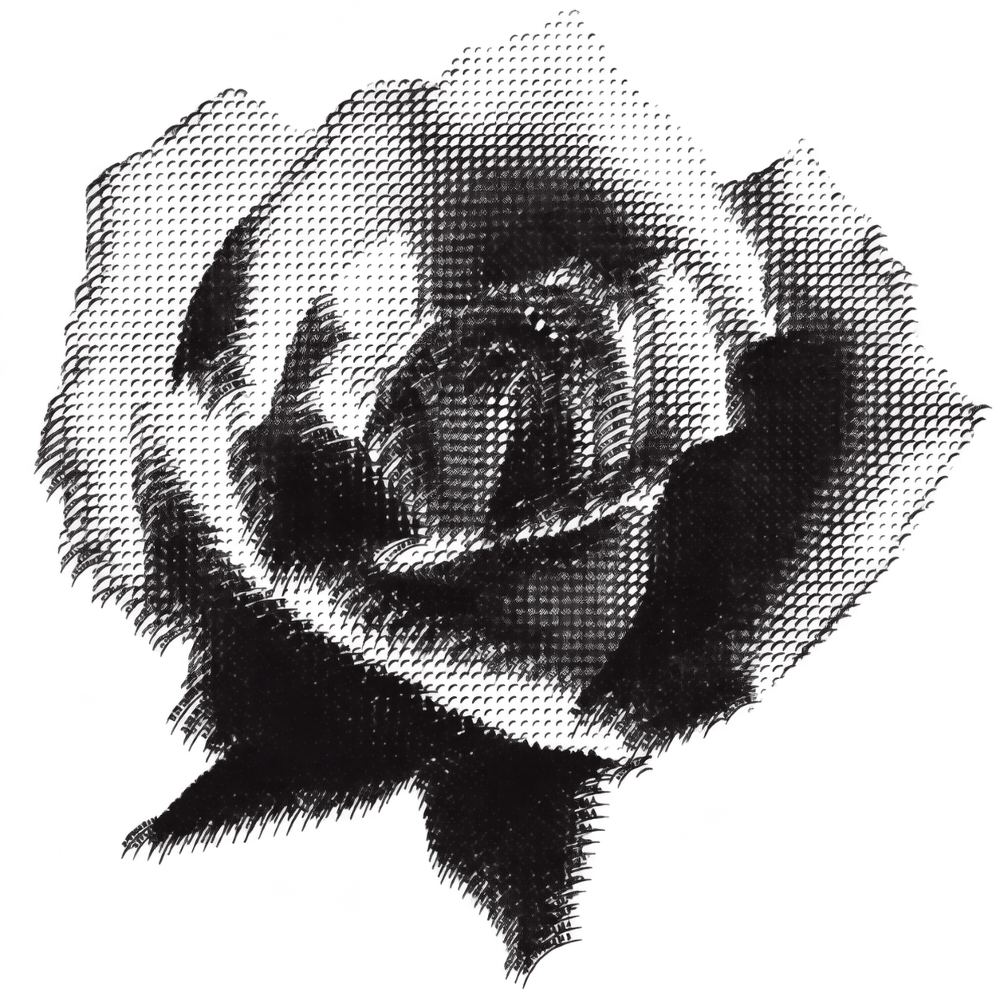
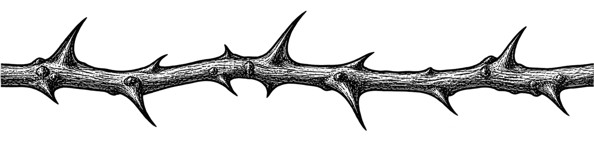

Minnie Park
인터랙티브 오디오비주얼 아티스트
서울 / 멜버른

장미와 감정을 탐색하는
인터랙티브 공간입니다.
감정마다 서로 다른 흔적을 남깁니다. 초기화하기 전까지 선택한 감정들의 변화가 함께 쌓입니다.
카메라는 선택사항입니다. 얼굴의 위치에 장미가 반응합니다. 손바닥으로 단어를 멈추고 엄지와 검지를 모아 선택하세요. 얼굴과 주변 영상은 표시하지 않으며, 브라우저에서 녹화나 업로드 없이 처리합니다. 마이크는 요청하지 않습니다. 인식 파일은 카메라를 켤 때만 불러오고 탭을 벗어나면 카메라가 멈춥니다. 감정은 직접 선택하며 얼굴에서 판독하지 않습니다.
장미는 제한된 회전이 가능한 이미지 기반 릴리프입니다. 시각적 반응은 감정에 대한 평가가 아닌 예술적 구성입니다.
